Fighter Roster
Four trained fighters plus one deliberately brainless bot. The bot exists to pad the 8-slot bracket and is accepted as broken.
Matt
ProductionRole: Balanced baseline. Lightweight body (massScale 1.0), standard stance reward. The "default" fighter used as the trunk ancestor for cross-character warm starts.
Standard
ProductionRole: Reference fighter; identical physics to Matt but distinct character sheet. Ships the legacy 41-obs / period-5 brain that is the compat fallback in Agent_Biped.
Nick
ProductionRole: Light and mobile (massScale 0.85). Higher closing reward, lower stance reward - the "perimeter" playstyle. Speaks and emotes fully (Happy / Sad / Insult, 5 levels each).
Kim
ProductionRole: Heavy planted anchor (massScale 1.45, widthScale 1.30). Higher stance reward, lower closing - the "lean and hold" playstyle. Cheers a win, silent when losing or taunting (only Happy voice set).
Bot
Bot (no brain)Role: Deliberately brainless. Agent_Bot drives a procedural heuristic so the body still moves, but logs character 'Bot' has no inferenceModel on every match and collapses as a ragdoll. Accepted.
Training Status
All four shipped brains were trained against the same ring-out curriculum and self-play pool; the cognitive profile diverged only via the per-character reward shaping.
Mean Reward vs Target Progress (per fighter)
Mean reward bars represent the most recent measurable fight-run mean reward; target bars show the per-fighter mean reward needed for sustained ring-out win-rate > 35% (rough heuristic from the May-June 2026 sweeps). Bars are not cumulative - use TensorBoard ELO curve for ranking.
Matt
Mean (fight) vs target
Mean (walk)
Stamina avg over round
Standard
Mean (fight) vs target
Mean (walk)
Stamina avg over round
Nick
Mean (fight) vs target
Mean (walk)
Stamina avg over round
Kim
Mean (fight) vs target
Mean (walk)
Stamina avg over round
Executive architecture
Pipeline from a YAML config to runtime inference. Read top-to-bottom: training produces ONNX, the editor deploys it, runtime loads it into the brain agent, the agent drives the body, the referees and presentation companions finish the picture.

Lifecycle overview
The single-tick loop. Every 20 ms: collect, normalize, infer, apply motors, step physics, sample sensors, evaluate reward, check terminals.

Tensor Blueprint
45-float observation vector, the 3x512 dense trunk, the 13-action head, and the 13 motor drives it lands on. Toes are unpowered and not in the action space.

Detailed Lifecycle - tensors and PhysX
Per-step tensor path with the Sentis engine, Hill force-velocity curve, activation lag, fatigue integrator, motor slew limiter, and the PhysX 2D island solver. This is what one 20 ms tick actually does.

Reward Tree
Three trees: Sumo (per-character), Walk (per-character), Shared (energy / jerk / effort / cadence). Terminals only fire from Agent_Biped; providers cannot end an episode.

Hyperparameter Matrix
PPO config, network architecture, reward signals, self-play settings, training schedule, and reward-weight matrix from the per-character character sheet.

Detailed Architecture - memory + tensor path
Includes the editor tools, the two referees, the static state cleared on SubsystemRegistration, every presentation companion, and the engines (Sentis, PhysX 2D, UI Toolkit).

ONNX tensor graphs
All four shipped brains share the same input/output contract: obs_0 [batch, 45] -> 3x Dense(512, ReLU) with input normalization -> Linear(13). 14 initializers, ~445k parameters, 2.13 MB. Inference runs at Sentis via Unity.InferenceEngine.ModelAsset.
| Fighter | File | Size (MB) | Input | Hidden | Output | Init. | Params (approx) |
|---|---|---|---|---|---|---|---|
| Matt | Assets/Agents/Matt_v01/Matt.onnx | 2.13 | obs_0 [batch, 45] | 3x Dense(512) | continuous_actions [batch, 13] | 14 | ~445k |
| Standard | Assets/Agents/Standard_v01/Standard.onnx | 2.13 | obs_0 [batch, 45] | 3x Dense(512) | continuous_actions [batch, 13] | 14 | ~445k |
| Nick | Assets/Agents/Nick_v01/Nick.onnx | 2.13 | obs_0 [batch, 45] | 3x Dense(512) | continuous_actions [batch, 13] | 14 | ~445k |
| Kim | Assets/Agents/Kim_v01/Kim.onnx | 2.13 | obs_0 [batch, 45] | 3x Dense(512) | continuous_actions [batch, 13] | 14 | ~445k |
| Bot | - | 0 | n/a | n/a | n/a | 0 | 0 |
Sentis outputs in full
| Tensor | Shape | Purpose |
|---|---|---|
version_number | [1] | Engine ABI version; mismatch raises on load. |
memory_size | [1] | Hidden-state width (always 0 here; trunk is feed-forward). |
continuous_actions | [batch, 13] | Stochastic action sample (mean + fixed sigma at inference). |
continuous_action_output_shape | [1] | Schema echo. |
deterministic_continuous_actions | [batch, 13] | Greedy mean path; used for inference-only playbacks. |
Joint physics specification
All 16 joints on the right side. Mirrored by facingSign on the left. Powered joints (13) drive the policy; unpowered (2 toes) complete the foot without changing the action space.
| # | Joint | Range (deg) | Torque (N m) | Speed (deg/s) | Reversal | Passive stiffness | Powered |
|---|---|---|---|---|---|---|---|
| 0 / 3 | Hip near / far | -120 .. 30 | 300 | 260 | 0.12 s | 6% / 90 deg | yes |
| 1 / 4 | Knee near / far | 0 .. 150 | 250 | 320 | 0.12 s | 6% / 90 deg | yes |
| 2 / 5 | Ankle near / far | -35 .. 35 | 160 | 220 | 0.12 s | 6% / 90 deg | yes |
| 6 / 7 / 8 | Spine 1 / 2 / 3 | -20 .. 20 | 180 | 160 | 0.12 s | 6% / 90 deg | yes |
| 9 / 11 | Shoulder near / far | -120 .. 120 | 80 | 320 | 0.12 s | 6% / 90 deg | yes |
| 10 / 12 | Elbow near / far | -150 .. 0 | 60 | 320 | 0.12 s | 6% / 90 deg | yes |
| 14 / 15 | Toe MTP near / far | -35 .. 35 | 40 | 400 | n/a | 6% / 90 deg | no |
Force-velocity & activation
- Hill a/F0: 0.25 - concentric torque falls off with shortening velocity.
- Eccentric gain: 1.5x - braced isometric resists stretch.
- Activation time constants: rise 0.05 s, fall 0.07 s (muscle activation is asymmetric).
- Motor reversal slew: 0.12 s end-to-end - prevents instantaneous inversion between steps.
- Passive damping: 10% per 400 deg/s.
- End-range stiffening: cubic past 70% of half-range, gain 6x at the stop.
- Fatigue: Xia two-state, rate 0.06/s, recovery 0.10/s, depth 0.35 (35% max loss).
Observation vector breakdown
Every entry is normalized and parent-local in the facing frame. The task flag at index 35 is what separates a fight observation from a walk observation.
| Index | Count | Slot | Source |
|---|---|---|---|
| 0 | 1 | torsoVel.x | Rigidbody2D.linearVelocity.x on Torso |
| 1 | 1 | torsoVel.y | Rigidbody2D.linearVelocity.y on Torso |
| 2 | 1 | upright | dot(Torso.up, worldUp) [-1, 1] |
| 3 | 1 | torsoY | Torso.position.y - arenaGroundY |
| 4 | 1 | rootMass | Torso.mass |
| 5..17 | 13 | joint angle | HingeJoint2D.jointAngle in deg, divided by limit, multiplied by facingSign |
| 18..30 | 13 | joint speed | deg/s, slew-limited |
| 31..34 | 4 | foot contact | near/far x foot, normalized load |
| 35 | 1 | task flag | 1 = sumo, 0 = walk |
| 36..39 | 4 | opponent or walk target | relX, relY, velX, velY |
| 40..41 | 2 | edge distances | nearX, farX relative to ringHalfWidth |
| 42..44 | 3 | extended (opt-in) | opponent uprightness, down flag, edge distance (Matt / Kim) |
Hyperparameters in full
| Group | Field | Value |
|---|---|---|
| Hyperparameters | batch_size | 2048 |
buffer_size | 20480 | |
learning_rate | 3.0e-4 (linear schedule) | |
beta (entropy) | 5.0e-3 | |
epsilon (clip) | 0.2 | |
lambd (GAE) | 0.95 | |
num_epoch | 3 | |
learning_rate_schedule | linear | |
| Network | normalize | true |
hidden_units | 512 | |
num_layers | 3 | |
vis_encode_type | simple | |
| Reward | extrinsic.gamma | 0.997 |
extrinsic.strength | 1.0 | |
| Self-play | window | 25 |
play_against_latest_model_ratio | 0.25 | |
save_steps | 50000 | |
swap_steps | 50000 | |
team_change | 250000 | |
| Schedule | max_steps | 15,000,000 |
time_horizon | 1000 | |
checkpoint_interval | 250,000 | |
keep_checkpoints | 5 | |
summary_freq | 30,000 | |
threaded | true |
Scene layout (Tech view)
